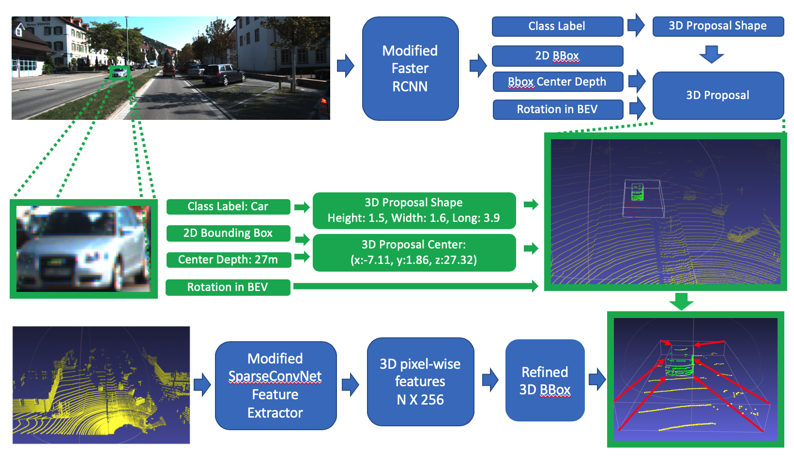

Yupeng HAN
Perception Algorithms: |
2D and 3D Feature Fusion for Autonomous Driving |Advisor: Prof. Cewu LU
Research Assistant, Machine Vision and Intelligence Group, CS Department, SJTU
Explored using a single model makes 3D detection in multi-scale objects; generated ideas to strengthen the 3D point cloud and extracted features by utilizing 2D RGB extracted features and dynamic anchor boxes’ size determined by 2D images.
Built the pipeline of the fusion network, including extracting different features from point clouds and RGB images, transforming 2D information to 3D proposal boxes, cropped key points and their 3D features inside the proposal boxes, and concatenated 3D features with 2D features, and performed post-processing.
Implemented a modified version of Faster-RCNN from scripts to feed in RGB images and output bounding boxes, classification labels, estimated depths, and proposal orientations in bird–eye view -– this project had over 6k lines of code.
Selected the sparse convolution network as the backbone of the 3D point cloud feature extractor due to its performance on ScanNet.
|  |
Face Detection on Depth Images with Low Computation Power| Supervisor: Dr. Bo WANG, CTO at Deptrum
Independently implemented a modified version of the multi-task cascade CNN model based on Caffe and Python from scripts which solved the problem of facial detection on completed depth images; optimized the model to obtain 99.93% precision and over 97% recall.
Fine tuned the multi-task cascade CNN model and predicted the bounding box of human faces with the fine-tuned model on the RGB images corresponding to the depth images and saved the results as the labels for depth image face detection; transfered the RGB bounding box to depth images according to the camera model's intrinsic parameters.
Utilized median blur filters to address pepper-salt noises, applied histogram equalization to preprocessing near-infrared speckle pictures.
Data-Aware Algorithm to Solve Discrete Integration | Advisor: Prof. Yexiang XUE
Machine Learning Group, CS Department, Purdue University
Inspired by “Taming the Curse of Dimensionality: Discrete Integration by Hashing and Optimization” and exploited a data-aware strategy to modify the original algorithm.
Generated a novel adaptive comparison strategy to reduce the expectation of computational complexity without loss of constant estimation guarantee and compared to the new algorithm with an imaginary “optimal” algorithm to provide a regret bound for the new algorithm.


Modeling and Analysis of Complex System | Advisor: Prof. Jitesh Panchal
Design Engineering Lab at Purdue(DELP), ME Department, Purdue University
Solved the difficulty of service seekers when faced with a large number of service providers, also addressed the drawbacks of the First In First Out (FIFO) matching mechanism by developed a stable matching system based on utility theory to generate the preference lists of service providers and service seekers. The matching mechanism was accomplished based on different utility interests. Searched for the optimal matching frequency using the provided matching.
Implemented the matching algorithm based on MATLAB and simulated service seekers arrive as a Poisson process with a fixed number of service providers offering resources. The service providers could only serve for one service seekers at one time.
Thekinen J., Han Yupeng, and Panchal J. H., "Designing market thickness and optimal frequency of multi-period stable matching in CBDM"
ASME 2018 International Design Engineering Technical Conferences Computers and Information in Engineering Conference. [pdf]
Social Network Analysis | Advisor: Prof. David F. Gleich
CS Department, Purdue University
Read Ego-splitting from previous paper which is a highly scalable and flexible framework that reduces the complex overlapping clustering problem to a more straightforward and more amenable non-overlapping partitioning problem.
Re-accomplished the Ego-splitting framework in Julia. The new framework could handle a large graph (millions of edges) within a few (less than 10) minutes.
Demo of how Ego-splitting works, nodes stands for people, and edges stands for relationship. Nodes #1 is Yupeng HAN, nodes #2, #3, #4 are Yupeng's shoolmates, nodes #8, #9, #10 are Yupeng's co-workers and nodes #5, #6, #7 are Yupeng's family members. To better analysis the social network, we can divide Yupeng in to three nodes, #1, #11, #12 to represent Yupeng's working, studying, home characters. Following are the demo and the result of the efficiency.
 |
 |